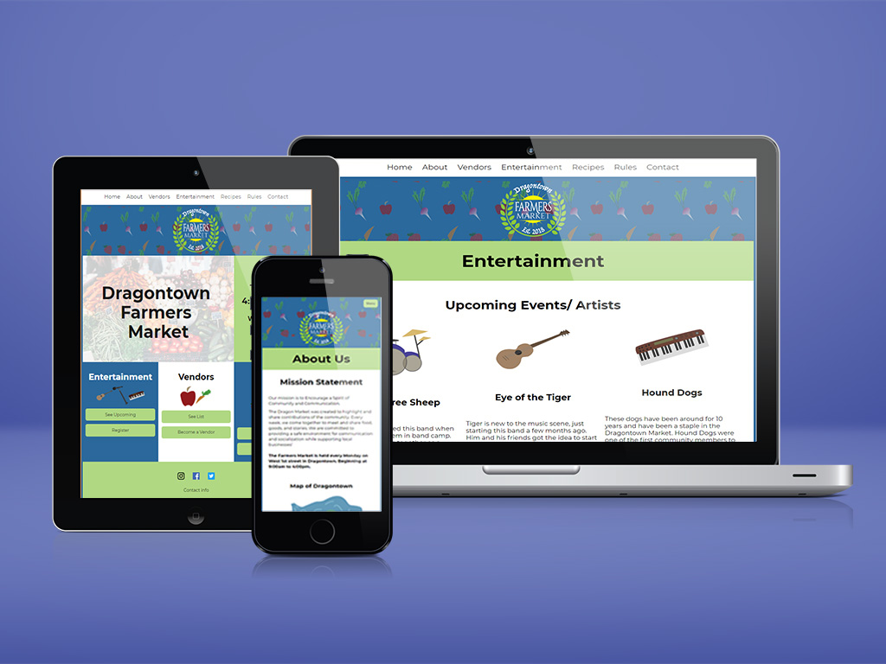
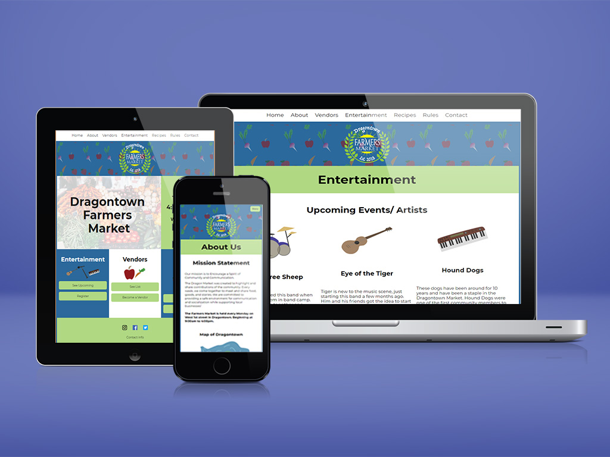
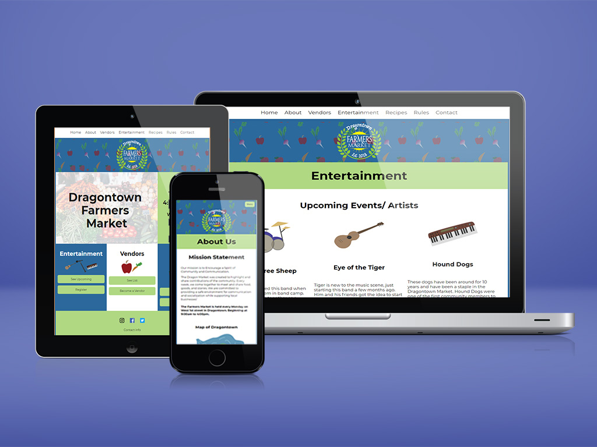

work
 



| taraogrady. | work about blog contact |
Associate Solutions Architectloves research, data, and her dogs
|

I have a MA in Human-Computer Interaction with an Advanced Certificate in Integrated Health Systems. My BA is in Cognitive Science with minors in Mathematics and Psychology.
I am an advocate for closing the gender gap in technology and have participated in women in tech organizations and facilitating a Girls Who Code chapter. An amazing opportunity brought me to Da Nang, Vietnam where I was able to collaborate with creators at Enouvo IT Solutions and create workshops focuses on providing young women resources and project structure to learn computer science.
In the past I have worked as a florist, a medical scribe in an Emergency Room, and as a bartender in a heavy-metal basement bar.